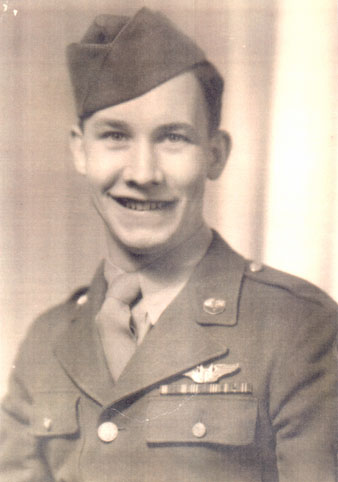

(L to R: Bea, Ginny, Dick , & Bobbie)
| Robert Richard Brown, or "Dick" as he was known, was the firstborn of Robert & Christina Brown on October 10th, 1925. He had three younger sisters. |
(L to R: Bea, Ginny, Dick , & Bobbie) |
|
 |
Dick served in the Air Force during World War II. He married Helen Morris in 1948. They lived in Liverpool, NY and had nine children together. He died October 14, 1972. |